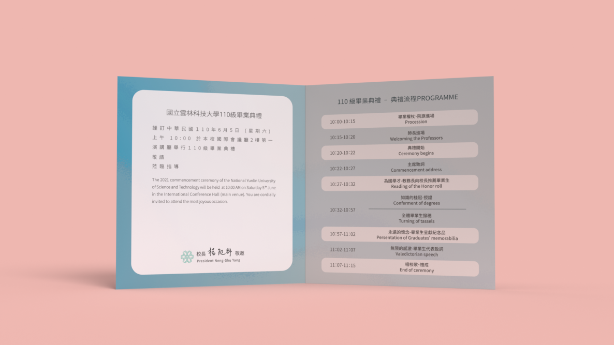

【雲科大110級紀念影片】
【 創作理念 】
本專案的圖像設計概念，是以畫圖說故事的方式，用象徵的手法表現出「學生與雲科大共度的時光中，我們成功尋覓了更多可能性，並且大家最後都找到屬於自己的道路。」
【 意象 】
身為學生的我們，在知識的學海中載浮載沉，穿著學士服、手中拿著望遠鏡，努力在大海中央尋找方向，然而雲科大在我們最青春燦爛的年華扮演著指南針的角色，引導學生找到象徵「希望」與「新生活」的島嶼。最後的我們都各自登上了屬於自己的小島，開始了全新的未知旅程。
是一種用於指示方向的工具，
廣泛應用於各種方向判讀，
譬如航海、野外探險、城市道路、地圖閱讀等領域。
在此則引用為指引學生未來的方向。
象徵廣大深遠的知識庫，
在海上尋找新島嶼的我們象徵追尋夢想的過程。
「哥倫布發現新大陸」，
這是人們再熟悉不過的一句話。
自從遠古的航海時代，
航海家們就將島嶼，
視為「希望」以及「新生活」，甚至是「夢想」的象徵。
代表孕育我們成長的雲科大，
並將其與指南針結合，
呈現「雲科大扮演了學生們的指南針」。
【 LOGO創作理念 】
手繪風格造型字體，
為表現「船隻在海上隨風起舞」的感受，
字體多以曲線構成，並於「起」添加了船帆的意象。
【 作品Mockup 】

邀請卡(反)

【 結語 】
感謝雲林科技大學的胡景龍教官的信任，給我這項攸關全校顏面的重責大任，老實說在收到工作邀約的當下我非常緊張，雲科畢竟是設計大校，擔心做得不好，邀請函發出去會不會等著別人笑話。但隨後我仍然鼓起了很大的勇氣赴約，我很高興自己完成了這項任務，雖然因為2021年的疫情大爆發，印刷品並沒有送出去，自己也為此感到遺憾許久，但工作上受到的肯定令人備感鼓舞，也希望未能參加典禮的家人們可以為我感到光榮。
引入Portfolio List